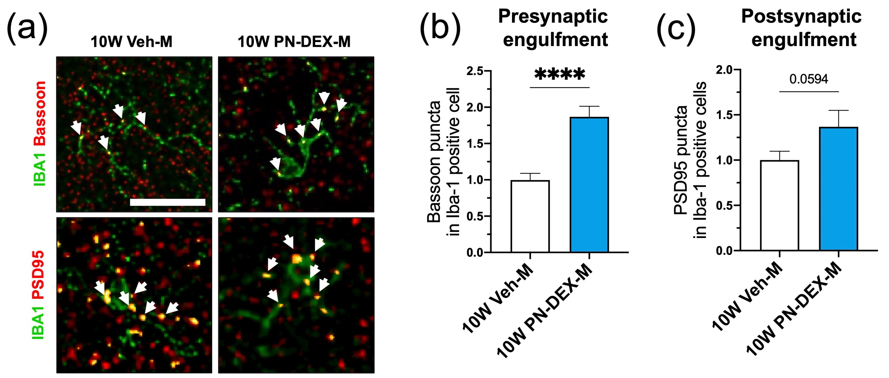

Microglial function
Intrinsic mechanisms compromising microglial function and microglia-mediated non-cell-autonomous pathophysiology in brain aging and neurodegeneration.
How microglia change across lifespan, health and disease.
Follow the research storyMicroglia senescence · Neuroimmune crosstalk · Biomolecular condensate · Liquid–liquid phase separation
A neuroscientist investigating microglial homeostasis, neuroimmune crosstalk and biomolecular condensates.
2020–2025
Department of Life Sciences, CHA University, Korea
Dissertation advisor: Min-Soo Kwon, M.D., Ph.D.
2013–2017
Double major · School of Counseling Psychology and Social Welfare
Handong Global University, Korea
2025–present
Nahm Lab · Department of Brain Health and Disease
Korea Brain Research Institute, Korea
2026–2031
Principal Investigator
Investigating circular RNA-mediated regulation of RBP phase separation and its therapeutic application in ALS–FTD.
₩500,000,000
2021–2024
2024
Invited scientific programme lecture · Microglia and PFN1
2025
Invited talk · Session II: Translational Research
2025
Journal of Neuroinflammation · npj Aging · Molecular Neurobiology · Journal of Molecular Neuroscience
Multifaceted functions in brain health and disease.
From homeostatic surveillance to pathological aggregation, the work asks how cellular state reshapes the nervous system.
Intrinsic mechanisms compromising microglial function and microglia-mediated non-cell-autonomous pathophysiology in brain aging and neurodegeneration.
Mechanistic and therapeutic exploration of liquid–liquid phase separation-based regulation of RNA-binding protein aggregation and stress-granule disassembly in ALS–FTD.

Biomolecular condensates in neurodegeneration
RNA is not simply cargo within a condensate. At an intermediate RNA-to-RBP ratio, RNA–protein, protein–protein and RNA–RNA contacts can form a highly connected network that favours condensation. Too little RNA limits bridging, whereas excess RNA can disperse RNA-binding proteins across separate molecules.
Condensation is therefore distinct from pathological aggregation. Sequence, structure, affinity, localization, stress and proteostasis determine whether a dynamic liquid assembly remains functional or matures toward a persistent pathological state.

Neurons are post-mitotic, while resident microglia proliferate only sparingly under homeostatic conditions. This raises a shared question: can cells with little proliferative dilution progressively retain long-lived RNA species as RNA surveillance and proteostasis become less efficient with age?
Circular RNA is one example rather than the only accumulating species. Its covalently closed structure makes it comparatively resistant to exonuclease-mediated decay, but other stable RNAs and persistent RNP assemblies may create related scaffold effects.
The working strategy is to test whether selectively removing or disrupting disease-promoting RNA scaffolds can reduce local multivalency, preserve reversible RBP assemblies and limit their transition toward solid-like aggregation. Circular RNA provides a tractable entry point—not an exclusive explanation.


In ALS, condensate biology connects disease-associated RNA-binding proteins—including TDP-43, FUS and stress-granule components—to altered neuronal proteostasis. RNA and circular RNA may tune these assemblies, creating opportunities to modulate their material state before reversible condensates become persistent aggregates.
The second and fourth routes most directly extend the One cell type perspective: microglia can shape motor-neuron pathology through non-cell-autonomous inflammatory and phagocytic signalling, while paired iPSC-derived motor-neuron and microglia models make this human cellular crosstalk experimentally accessible.
Long-lived immune cells turn the brain’s past into its present state.
The working hypothesis unfolds as a continuous argument: what microglia sense, why their cellular history accumulates, and how senescence changes their function in the aging brain.
Through phagocytosis and synaptic pruning, microglia regulate immune and synaptic environments while sensing neuronal activity, tissue-remodelling cues and cytokine signals across the CNS.

Among CNS cell types, microglia show especially rapid transcriptomic aging. In the aged brain, a measurable subpopulation also expresses the senescence marker p16INK4a, placing cellular senescence within normal brain aging.


Microglia originate from yolk-sac erythromyeloid progenitors, enter the prenatal brain and persist largely through local self-renewal. Their long average lifespan and limited replacement allow cellular history to accumulate, so even a small aged population may exert disproportionate effects.

Under physiological conditions, microglia rarely undergo clonal expansion. Removing lateral inhibition permits proliferation and migration, whereas repeated depletion-repopulation may shorten telomeres and move cells toward a proliferation-arrested state.


Microglia are long-lived, minimally replenished and normally only weakly proliferative. Because they integrate immune and non-immune information while maturing stepwise, homeostatic, disease-associated and senescent states can form a continuous age-dependent trajectory.


Accumulated DNA damage can induce senescence and SASP signalling. The resulting microglial activation, inflammatory cues and altered communication with neurons, oligodendrocytes and astrocytes provide a route from cellular aging to impaired remyelination, synaptic support and neuronal health.

Genomic instability, cytoplasmic aggregates and bioenergetic dysfunction converge on impaired phagocytosis and inflammatory SASP output. Across the lifespan, phagocytic capacity declines while synaptic pruning and immune vigilance rise again in aging, producing a hyper-responsive yet less restorative state.


Prenatal dexamethasone produced schizophrenia-relevant behaviours in male offspring and depressive-like behaviours in females, accompanied by distinct microglial changes across the mPFC and hippocampus.
Five first- or co-first-author papers, including one review, lead the record.
Department of Brain Health and Disease
Korea Brain Research Institute
+82) 10-9487-2461
chanrim (at) kbri (dot) re (dot) kr
chanistics (at) naver (dot) com